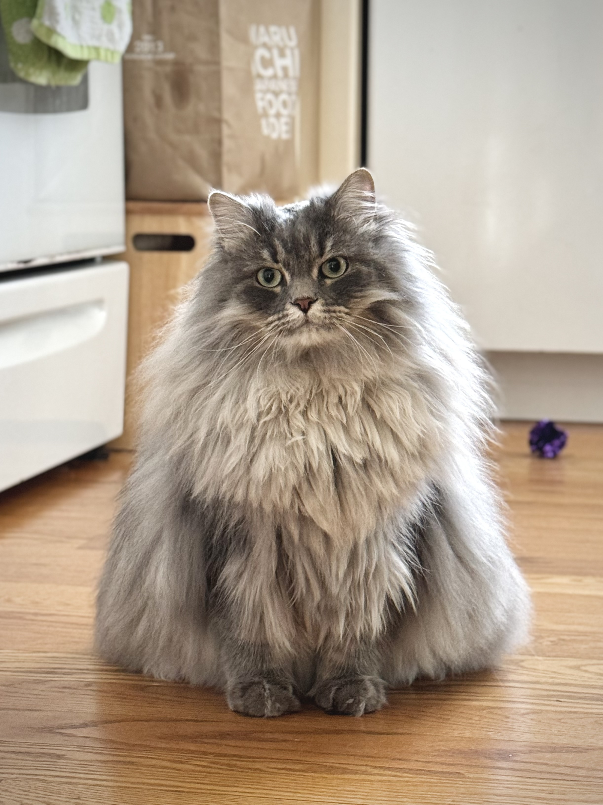

Machine Learning
- Hierarchical Agentic Planning using LLM with RL
- Reinforcement Learning for Discrete and Continuous Control
- Enhancing Generalization in Wildlife Monitoring
- Gesture-Controlled UAV System
machine learning · robotics · software
I build software, machine learning, and robotics systems. I’m interested in building reliable and scalable systems that are aimed to solve real-world solutions.
I recently completed my M.S. in Computer Science at UMass Amherst, after studying Computer Science and Robotics Engineering at WPI. My work includes but not limited to reinforcement learning, computer vision, distributed robot control, and cloud-backed applications.
I own a lovely fluffy beast that I would love to share with the whole world.
